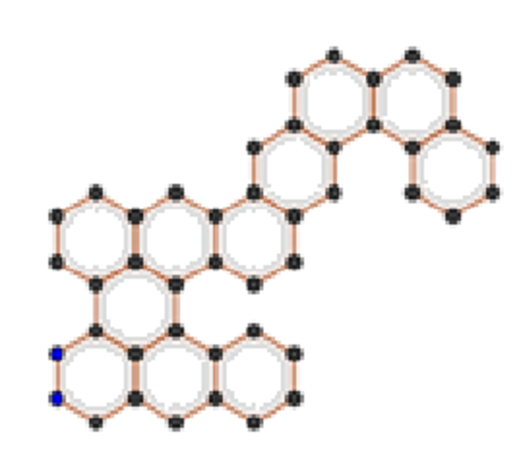

Quantum LMSR: Accelerating String Rotation

Research Motivation
- Many benzenoid hydrocarbons admit multiple boundary-edge codes under different rotations of their outer face.
- These codes depend on the chosen start vertex (commonly the lowest-left) and the traversal direction.
- A single canonical code per isomorphism class enables fast equality checks and compact chemical indexing. 
Fig 1: Compound with a boundary code \(e(B)\)
Classical Approach
- Traverse the outer face of the molecular graph, recording turn-and-edge types into a sequence.
- Generate all cyclic shifts of this boundary-edge code (string rotations) to capture every possible "view".
- Use a minimal-rotation algorithm (e.g., Booth's or Duval's) to pick the lexicographically smallest code.
Computational Problem
- Given a boundary-edge code of length \(n\), find its minimal cyclic rotation (the canonical form).
- Best classical complexity: \(O(n)\) or \(O(n \log n)\) for minimal-rotation string algorithms.
- Quantum proposal: employ QRAM to load all rotations in superposition and use Grover-style search over indices for a potential speed-up.
Quantum Lists & Superposed Indexing
- What is a Quantum List?
- A mapping between an
indexand adataregister via QRAM: - \(\sum_i a_i \lvert i\rangle \otimes \lvert 0\rangle \xrightarrow{\text{QRAM}} \sum_i a_i \lvert i\rangle \otimes \lvert \text{list}[i]\rangle\)
- Effectively loads all list entries into superposition at once
- A mapping between an
- Key Properties:
- Read-only: preserves no-cloning (query without destructive overwrite)
- Parallel lookup: one QRAM query accesses every element weighted by its amplitude
- Unitary & reversible: routing and fan-out built entirely from reversible gates
- Our Proposal: superpose the index register itself to enable end-to-end quantum parallelism
Quantum Approach
- Use Grover's search to locate minimal rotation index with \(O(\sqrt{n})\) queries.
- Encode rotation cost function as quantum oracle: \[O_f:\lvert i\rangle\lvert0\rangle \to \lvert i\rangle(-1)^{f(i)}\lvert0\rangle.\]
- Amplitude amplification finds marked index faster than classical scan.
Algorithm Steps
- Initialize a loop over rotation indices
- Within each iteration:
- Step 1: Find the current minimum via the marked-state oracle (Dür & Høyer)
- Step 2: Prepare the oracle, diffusion operator, and
inc_modMgate (\(M\) = list length) - Step 3: Execute Grover search for \(k\) iterations
- Step 4: Measure the quantum register
- Step 5: Check stopping criteria; if not met, continue
- After exiting the loop, retrieve the minimal-rotation index, undo any modular increments, and return it
Visualization & Results

Fig 1: Initial state with uniform superposition

Fig 2: First iteration result

Fig 3: Second iteration result

Fig 4: Last iteration result & measurement outcome
Circuit Structure
- Apply Hadamard gates to all index qubits to create uniform superposition
- Perform \(\lfloor(\pi/4)\cdot\sqrt{N/M}\rfloor\) Grover iterations per loop:
- Oracle marks the current minimum rotation index
- Diffusion operator amplifies marked amplitude
inc_modMgate increments indices modulo \(M\) between rounds
- Measure the index register each iteration and check stopping criteria
- Once done, uncompute any modular increments and output the minimal-rotation index

Complexity & Resource Analysis
| Comparator | Average | Worst | Qubit Usage |
|---|---|---|---|
| Booth's Algorithm | \(\Theta(n)\) | \(\Theta(n)\) | \(n\) classical bits |
| Proposed (no QRAM) | \(\Theta(n)\) | \(\Theta(n^2)\) | \(\Theta(\log n)\) |
| Published LMSR | \(\Theta(n^{3/4})\) | \(\Theta(\sqrt{n}\log n)\) | \(\Theta((\log n)^2)\) |
| Proposed + QRAM (binary search) | \(\Theta(\sqrt{n}\log n)\) | \(\Theta(\sqrt{n}\log n)\) | \(n + \Theta(\log n)\) |
| Proposed + QRAM (hashing) | \(\Theta(\sqrt{n})\) | \(\Theta(\sqrt{n}\log n)\) | \(n + \Theta(\log n)\) |

Key Takeaways
- Rotation as a Unifier: Across strings, molecules, and quantum data, rotations preserve core structure while offering new "views" for canonicalization.
- Quantum Enhancement: QRAM + superposed indexing unlocks massive parallelism, enabling rotation-based searches on quantum hardware.
- Benzenoid Canonicalization: Lexicographically minimal rotations of boundary-edge codes yield unique, compact molecular identifiers for chemical databases.
Conclusion
Impact & Applications
- Chemical Informatics: Rapid molecule lookup with \(O(\sqrt{n})\) complexity, isomorphism checking, and scalable database indexing with \(O(\log n)\) space overhead.
- String & Pattern Matching: Rotation‑invariant text search with \(O(\sqrt{n})\) time complexity for bioinformatics and signal processing applications.
- Quantum Algorithms: Foundation for broader quantum data structures (e.g., sorted lists with \(O(\log n)\) depth, graph algorithms) and subroutines.
Future Work
- 3D & Dihedral Symmetries: Extend beyond cyclic rotations to include reflections and full molecular symmetry groups \(\mathcal{G}\) of order \(|\mathcal{G}|\).
- Robust QRAM Architectures: Prototype and benchmark bucket‑brigade vs. binary‑tree designs on NISQ devices with \(O(\log n)\) depth vs \(O(1)\) amortized depth.
- Integration with Quantum Circuits: Embed minimal‑rotation gates within larger algorithms (e.g., quantum string matching with \(O(\sqrt{n})\) complexity, graph isomorphism).